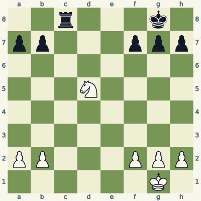
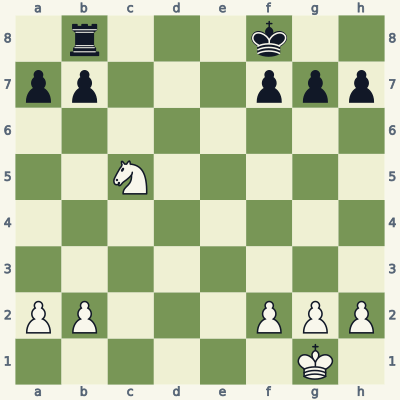
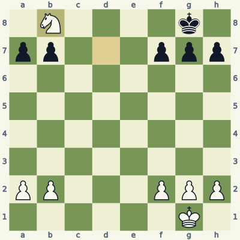
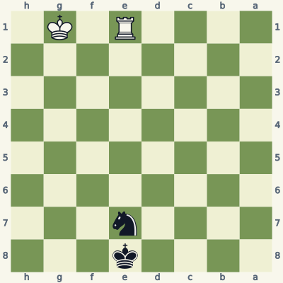
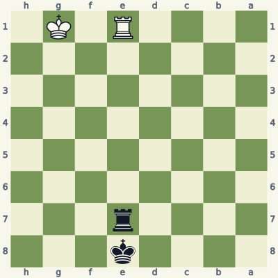
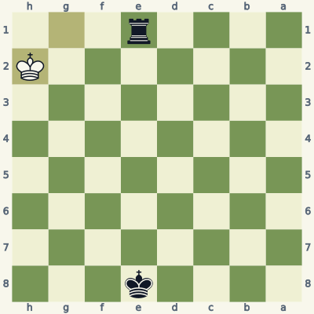
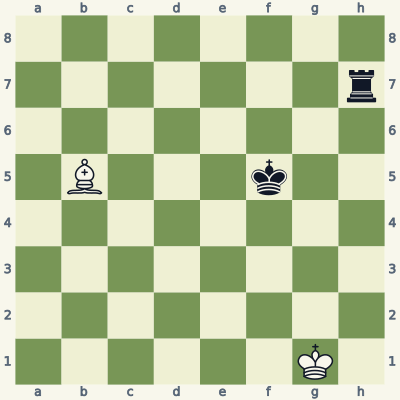
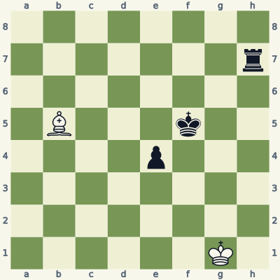
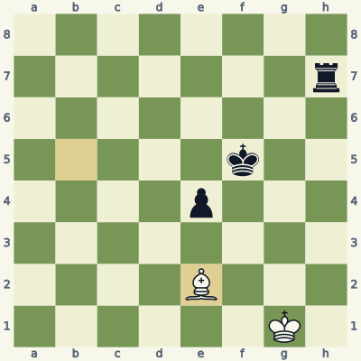

For players who know how the pieces move. Read the model, try the exercise without the answer, then explain the result aloud. Use a board and make the moves one at a time. Spend about 20 minutes per lesson; repeat it tomorrow and a week later.
Check the immediate threat, choose candidates, test the opponent's checks and captures, then inspect the final position. Some questions ask for a safe move or correct diagnosis rather than a unique best move. Sample replies illustrate ideas unless the explanation says they are forced.
Notation and replay help
K king · Q queen · R rook · B bishop · N knight. A pawn move has no piece letter. Nf3 means knight to f3; Rxc6 means rook captures on c6; + means check; # means mate; O-O means kingside castling; e8=Q means promotion. A line beginning 1... starts with Black. Diagrams face the player to move.
The PGN download loads starting positions and sample lines into a chess program. Position codes (FEN) let you recreate individual boards. The PDF and website work without an account.
Lesson 03.1
A fork must come with time
A knight fork attacks two targets. When one target is the king, the opponent must answer the check, often leaving no time to save the other target.

Model A · White to movePosition code2r3k1/pp3ppp/8/3N4/8/8/PP3PPP/6K1 w - - 0 1
Read the position
The knight on d5 can jump to e7.
From e7 it attacks the king on g8 and the rook on c8.
No black piece can capture the knight on e7 in response to the check.
1. Ne7+ Kf8 2. Nxc8
Ne7+ makes a double attack with check. Black must move the king; ...Kf8 is one legal reply. The knight then takes the rook with Nxc8.
Check the landing square before celebrating the pattern. A fork fails if the forking piece can be captured, if the second target moves with check, or if the first target can answer while saving the second. Here the king cannot capture the knight, and the rook cannot remove the check.
Exercise B · White to move
Take five minutes. Write your reason and the opponent's reply before opening the answer.

Inspect what changed from the model.Position code1r3k2/pp3ppp/8/2N5/8/8/PP3PPP/6K1 w - - 0 1
Find a knight move that attacks the king and rook at the same time.
Give a legal king reply, followed by the knight's capture.
Why does Black not have time to move the rook first?
Read the full explanation
Nd7+ attacks f8 and b8 from d7. The board has shifted, so use the knight's actual L-shaped moves rather than remembering e7 from Model A.
After ...Kg8, Nxb8 captures the rook. Other legal king moves still leave the rook forked. Check that no black pawn attacks the knight's landing square d7.
The king is in check. A rook move that does not capture the knight or otherwise remove the knight check is illegal. The checking component supplies the time needed to collect the second target.
1. Nd7+ Kg8 2. Nxb8

Position after the sample line; the last move is highlighted.
Score your explanation: 1 point for the fact and 1 for its consequence in each answer, out of 6. At 4 or below, replay the model and revisit tomorrow.
Where the idea can fail
A diagram that resembles a fork is only a suggestion. Name both attacked squares, inspect captures of the knight, and calculate one move beyond the apparent win.
Use it in your own games
On an empty board, place a knight on d4 and name all eight attacked squares. Then place a king and rook on two of those squares and test whether the fork is legal.
An absolute pin forbids moves that expose your king to check. It does not freeze a piece by a special rule; normal king-safety rules determine exactly which moves remain legal.

Model A · Black to movePosition code4k3/4n3/8/8/8/8/8/4R1K1 b - - 0 1
Read the position
White's rook on e1 points at the black king on e8.
The black knight on e7 is the only piece blocking that line.
Every knight move would leave the e-file, exposing the king.
1... Kf7
Black cannot move the knight while the king stays on e8 and the pin remains. A knight cannot slide along the pin line, so all of its jumps would uncover a rook check on its own king.
...Kf7 is a legal way to step out of the pin. This is a rule demonstration, not a claim that Black can save the ending against best play. Once the king is off the e-file, moving the knight no longer exposes that particular check.
Exercise B · Black to move
Take five minutes. Write your reason and the opponent's reply before opening the answer.

Inspect what changed from the model.Position code4k3/4r3/8/8/8/8/8/4R1K1 b - - 0 1
What piece replaced the pinned knight?
Is ...Rxe1+ legal? Trace the rook's entire path.
State a precise rule that works for both diagrams.
Read the full explanation
A black rook now stands on e7. Unlike a knight, a rook can move along the e-file and remain between the white rook and its king.
Yes. The squares e6 through e2 are empty. ...Rxe1+ captures the pinning rook and removes the threat to the black king. It also checks White along the first rank; Kh2 is a legal reply.
A move is illegal if it leaves your own king in check. A pinned slider may move along the pin line or capture the attacker if the resulting king position is safe. "A pinned piece cannot move" is an unreliable shortcut.
1... Rxe1+ 2. Kh2

Position after the sample line; the last move is highlighted.
Score your explanation: 1 point for the fact and 1 for its consequence in each answer, out of 6. At 4 or below, replay the model and revisit tomorrow.
Where the idea can fail
Pinned pieces still occupy and attack squares. For king moves, a square attacked by a pinned piece is still treated as attacked. Do not let your king capture a defended piece just because its defender is pinned.
Use it in your own games
Set up a rook pin, then replace the pinned piece with a knight, bishop and rook. For each, list legal moves instead of assuming the answer is unchanged.
A skewer attacks a valuable front piece and exposes a target behind it. The line must be clear both when the attack begins and after the front piece moves.

Model A · White to movePosition code8/7r/8/1B3k2/8/8/8/6K1 w - - 0 1
Read the position
The bishop can travel from b5 through c4 to d3.
From d3, the diagonal d3-e4-f5-g6-h7 contains Black's king and rook.
The black king must leave the diagonal when checked.
1. Bd3+ Ke5 2. Bxh7
Bd3+ checks the king on f5. After the illustrative ...Ke5, the bishop takes the rook with Bxh7. The king cannot move onto g6, because the bishop also attacks that square.
Distinguish the geometry: in a pin the protected target is behind the piece that is restricted; in this skewer the king is the front target and must move, exposing the rook. The resulting capture follows from an open diagonal, not from the pattern's name.
Exercise B · White to move
Take five minutes. Write your reason and the opponent's reply before opening the answer.

Inspect what changed from the model.Position code8/7r/8/1B3k2/4p3/8/8/6K1 w - - 0 1
What does the added pawn on e4 do to the diagonal?
Is Bd3 check? Calculate Black's simplest reply.
Give a legal bishop move that avoids losing it to that pawn.
Read the full explanation
The e4-pawn interrupts d3-e4-f5-g6-h7 before the line reaches the king. The bishop no longer attacks the king through that square.
Bd3 is not check, and ...exd3 captures the bishop. A black pawn on e4 attacks d3. White has mistaken a blocked line for the skewer in Model A.
Be2 is a safe example: b5-c4-d3-e2 is a clear route, and the bishop ends beyond the pawn's attacks. This does not claim White wins the rook ending; it answers the narrower question of preserving the bishop.
1. Be2

Position after the sample line; the last move is highlighted.
Score your explanation: 1 point for the fact and 1 for its consequence in each answer, out of 6. At 4 or below, replay the model and revisit tomorrow.
Where the idea can fail
Before moving a bishop onto an attacking diagonal, trace every intervening square. A pawn may block the line and may also capture the bishop on its proposed square.
Use it in your own games
When you spot a bishop tactic, read the whole diagonal aloud, including empty squares. Then ask what can capture the bishop on its new square.
All six starts and listed moves in this book were checked for legality. Stockfish 19 reviewed candidates at depth 18. Available endings with seven or fewer pieces were checked against the Lichess tablebase, including every move of the demonstrated endgame lines. A strategic sample is not a claim of unique best play.
These original, AI-assisted explanations were written around the positions and revised after checking. The lesson data and validation notes make the examples inspectable. Further reading and practice: